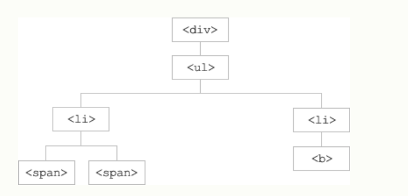

jQuery遍历参考手册
DOM树：

向上遍历DOM树
- parent():返回被选元素的直接父元素
- parents():返回被选元素的所有祖先
- parentsUntil():返回介于两个给定元素之间的所有祖先元素
向下遍历DOM树
- children():返回被选元素的所有直接子元素
- find():返回被选元素的所有后代元素
在DOM树中水平遍历
- siblings():返回所有同胞元素
- next():返回被选元素的下一个同胞元素
- nextAll():返回被选元素之后的所有同胞元素
- nextUntil():返回介于两个给定参数之间的所有跟随的同胞元素。（方向向后）
- prev():返回被选元素的上一个同胞元素
- prevAll():返回被选元素之前的所有同胞元素
- prevUntil():返回介于两个给定参数之间的所有跟随的同胞元素。（方向向前）
div（父）
p
h3
span
h4
h5
h6
h3
p
缩小搜索元素的范围
- first():返回被选元素的首个元素
- last():返回被选元素的最后一个元素
- eq():返回被选元素中带有指定索引号的元素
- filter():返回匹配标准的所有元素
- not():返回不匹配标准的所有元素